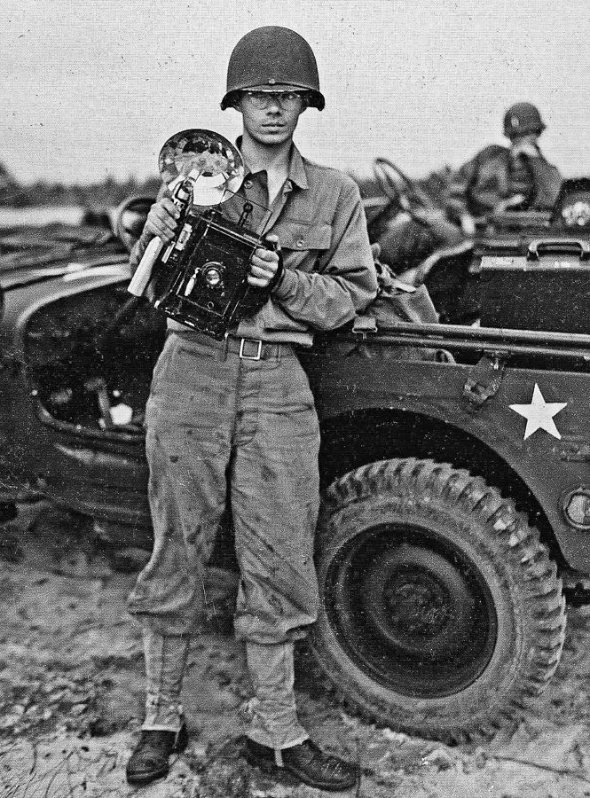
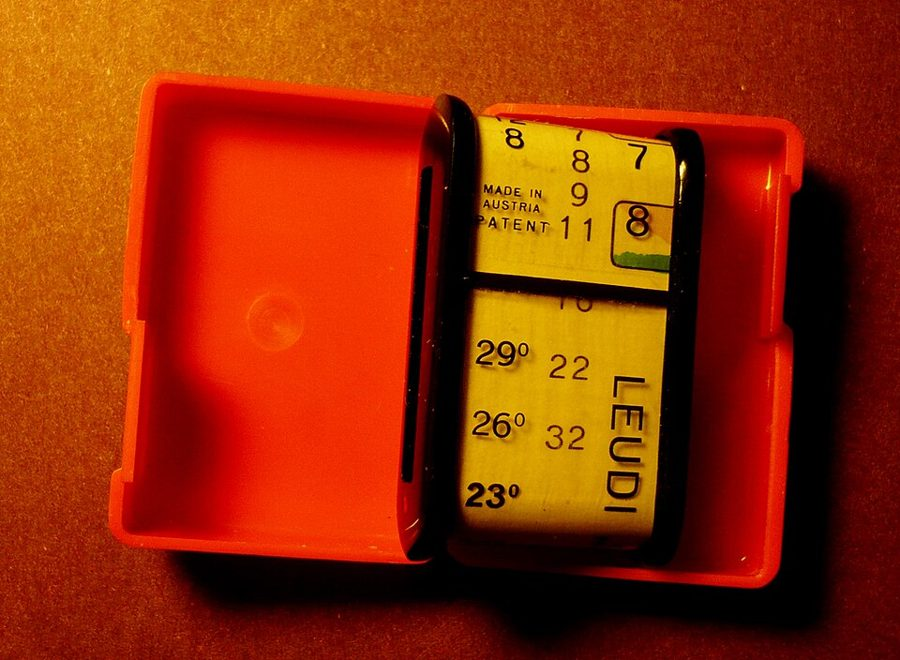
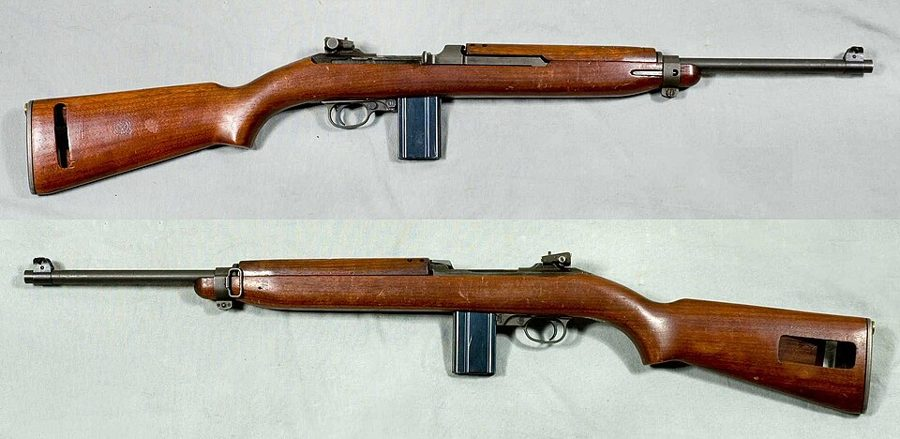
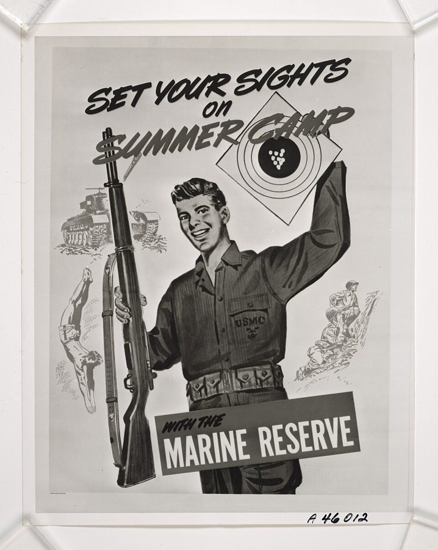

这一章在做什么
接上一页：摄影学校毕业，他挑了北卡罗来纳的勒琼营。这一页他二十二岁，先在基地照相馆拍照，后来被抽去警卫连站岗，最后自己想办法调走。
六节都是小故事，主角是一个不服管的下士。读的时候抓一条线：他怎样掂量每一条规矩，哪条照办，哪条绕开，绕开的代价是什么。
摄影学校
彭萨科拉
前一页
基地照相馆
第 11–12 节
一等兵升下士
警卫连
第 13–16 节
站岗、带班
补给站
摄影器材库
下一页
这三处都在勒琼营（Camp Lejeune）里，只是换了单位
本站示意图。书里给的时间只有两个：摄影班 1952 年 2 月开课、学三个月左右；调离警卫连是在劳动节那个周末。
出场的人
这一页有名有姓的只有三个，其余都没有名字，多半只叫「某个中士」。听书时靠的是前面的修饰语，先把他们分开。
Captain Galvin /ˈɡælvɪn/，上尉 基地照相馆的主管。摄影知识有的对有的错，老部下原本很服他。作者一伙来了以后，他的日子不好过。
the Pensacola gang 「彭萨科拉帮」 作者和同批分来的三个摄影学校毕业生。拍照比别人强，当兵比别人差，这个外号是别人起的，不全是好意。
Sergeant Grover /ˈɡroʊvər/，中士 照相馆里的中士，军衔比作者高。两人互相找茬，第 11 节有两个回合。
新闻处的中士 the public information office sergeant 没有名字。写稿的，作者给他配照片。第 12 节整节是他和作者的对话。
Douglas /ˈdʌɡləs/ 警卫连里的朋友，第 15 节的拳击对手。
the sergeant of the guard 带班中士，没有名字 第 14 节末尾半夜摸到弹药库来的人。
中校 a lieutenant colonel 基地司令部的参谋，第 16 节里无意中听见作者说话的人。
the First Sergeant 和年轻的 Pfc. 都没有名字 警卫连连部的两个人，一个要整他，一个帮了他。都在第 16 节末尾。
军衔和当班职务是两回事。 Sergeant、Corporal、Pfc. 是军衔，跟人走。Duty Photographer、corporal of the guard、sergeant of the guard 是轮到谁谁当的职务，当班那几个小时说了算，下了班就不是。第 11 节的第一场冲突就出在这上面。
背景：作者默认你知道的事
勒琼营：基地的人和驻在基地的部队
Camp Lejeune（通常读 /ləˈʒuːn/）在北卡罗来纳州海边，是海军陆战队在东岸的大基地，名字来自陆战队的一位老司令 John A. Lejeune。
基地里有两种人：驻在这里的作战部队第二陆战师，和管基地本身的 base personnel，文书、仓库、照相馆、警卫连都算后一种。朝鲜战争 1953 年 7 月才停战，这一页从头到尾都在战时。
谁管谁：军衔和指挥链
士兵这一边，书里出现的从低到高是 private、Pfc.（private first class，一道杠）、corporal（下士，两道杠）、sergeant（中士，三道杠），再往上有 master sergeant、First Sergeant。下士以上叫 non-commissioned officer，简称 N.C.O.。
军官是另一条线：second lieutenant（少尉）、captain（上尉）、lieutenant colonel（中校）、colonel、general。有事要一级一级往上报，这叫 chain of command。
基地司令
commanding general
司令部的参谋，中校
lieutenant colonel
中间各级
书里没写
警卫连连长，少尉
second lieutenant
我，下士
corporal，申请应从连里递起
他实际走的
直接去了司令部
Galvin 上尉
照相馆，原单位
也觉得被越过了
本站示意图，对应第 16 节。一级一级递申请叫 going through channels ，跳过去叫 jumping the chain of command 。
那时候拍一张照片

1945 年，美国陆军通信兵摄影连的一名摄影师和他的 4×5 英寸 Speed Graphic。这是陆军的照片，不是陆战队的；但军队和报社那些年用的就是这种相机，本章下一页会点到它的名字。
Don O'Brien，CC BY 2.0，维基共享资源 没有自动挡。光圈和快门靠测光表读数或者经验来定；底片一张一张装；闪光灯泡闪一次就废。拍完回暗房（darkroom），先用显影液（developer）把底片冲出来，再用放大机印成照片，常用尺寸是 8×10 英寸。
军队的 photo lab 从拍到印全包，所以半夜也可能被叫起来干活。
三种测光表

一只消光式测光表（Leudi 牌）。没有电池也没有指针，全靠眼睛。这是同类的一个例子，不是书里那一只。
Gisling，CC BY-SA 4.0，维基共享资源 第 11 节开头的行话。incident-light meter 量的是照到被摄物上的光，reflected-light meter 量的是被摄物反射过来的光，两种都靠光电元件带动指针。
extinction-type meter 是更老的东西：凑到眼前看一排越来越暗的数字，认得出的最暗的那个就是读数。人眼会适应明暗，所以同一个场景，刚从暗房出来和在太阳下站了半天，读出来不一样。
站岗

M1 卡宾枪，二战和朝鲜战争时期美军的制式卡宾枪。比步枪短、轻，常发给不在一线的人员。书里只说 carbine，没说型号。
Armémuseum（瑞典陆军博物馆），公有领域，维基共享资源 警卫连守的是大门、仓库、弹药库。哨兵领了多少发子弹，下岗要如数交回，少一发都要查。枪平时不许上膛，什么情况下可以装弹匣、开保险、上膛，各有规定。在岗位上睡着是要上军事法庭的。
带班的 corporal of the guard 佩一把 .45 口径的手枪，书里就叫它 a .45。
连休三天（含劳动节）
假期后三天
Starboard 班
站岗 站岗 站岗
补休 补休 补休
Port 班
放假 放假 放假
站岗 站岗 站岗
给他排的
站岗 站岗 站岗
站岗 站岗 站岗
先把他调到 Starboard
再调回 Port
本站示意图，对应第 16 节。平时两个班隔天轮换；每个当班日要站两次，比如正午到下午四点、半夜到凌晨四点。Labor Day（劳动节）是九月的第一个星期一，连着周末放三天。
新闻处和 the big lie

海军陆战队预备役的招募海报，号召人来参加「夏令营」式的夏季集训。年份不详。画上的人不出汗，也不捡弹壳。
美国海军陆战队，公有领域，维基共享资源 public information office 是部队里管对外宣传的单位，给报纸供稿供图。预备役（reservists）平时是老百姓，每年夏天到基地集训一阵，是宣传的好题材。
the big lie 这个说法出自希特勒的《我的奋斗》：谎要撒得够大，人才会信。二战刚过去七年，这个词人人知道。第 12 节那位中士拿它说自己的差事，是行内人的自嘲，口气很冲，意思很实在。
留个记号：后面还会回来
这一页有两处作者自己停下来下了断语，另外两条是接前面、通后面的线。
「我已经在像经济学家那样想了」 第 11 节 他说当时自己没意识到。这时他还没学过经济学。看他是在算一笔什么账。
敌人、朋友和运气 第 13 节 全节最后两句，他说这是一辈子的规律。Preface 里女儿那句 “Luck!” 在这里有了回声；第 16 节末尾就应验了一次。
和海军陆战队斗智 承接前一页 新兵营里他说过，那是一场长期斗智的开头。这一页的每一节都可以当作其中一个回合来读，下一页还有。
形象和实情 第 12 节 本站的看法：照片拍得好却不能发，是因为它太真。「对外的说法」和「实际的样子」对不上，这个题目在后面的章节里还会碰到。
词与短语
词条按书里出现的顺序排，小标题是原书用 • • • 隔开的各节。斜体小字是那句话里的几个词，在 Kindle 里搜它就能跳到那一句。单个的生词长按就能查，这里收的主要是词典帮不上忙的。
第 11 节 · 照相馆和 Grover 中士
uneven knowledge
… had a very uneven knowledge of …
懂的地方懂，不懂的地方错得离谱
uneven 不是「不公平」，是高高低低不整齐。
swear by
… Captain Galvin swore by a third …
认准了，深信不疑
不是「对着……发誓」。swear at 才是骂。
on the road to extinction
… already on the road to extinction. …
快要绝迹了
文字游戏：extinction-type meter（消光式测光表）自己正走向 extinction（灭绝）。
be better off guessing
… would be better off guessing at …
还不如瞎猜
better off doing ：那样做反倒强些。这话是当着上尉的徒弟说的。
the smart new kids
… after the smart new kids arrived …
新来的那几个机灵鬼
站在老人的角度说自己。smart 在这里带刺：自以为聪明。
by and large
… By and large, we were better …
总的说来
和 large 的字面无关。
make no great effort to
… we made no great effort to …
压根没打算去（合群）
往轻里说。fit in = 融入。
after hours
… hung out after hours with one …
下了班以后
hours 指上班时间。hang out = 凑在一起消磨时间。第 107 段还有一次 after hours。
not always affectionately
… known—not always affectionately—as “the Pensacola gang.” …
叫的时候并不总是带着好感
要反着读：多半是带着火气叫的。gang 是「一伙人」，也是「帮派」。
Don’t sweat it, ace
… Pensacola was “Don’t sweat it, ace.” …
「别急嘛，老兄。」
sweat it = 为它着急上火。ace 本义是王牌，这里是随口的称呼，对上级说就是没大没小。
run it into the ground
… that we ran it into the ground, …
说得太多，说烂了
drive … up the wall
… ground, driving others up the wall. …
把别人逼得抓狂
human interest pictures
… human interest pictures for the camp …
人情味照片
新闻行话：不是大事，是让读者觉得亲切的小人物小故事。
corpses
… the resulting corpses in the morgue. …
尸体
听书注意：corpse 读 /kɔːrps/，p 和 s 都发音；Marine Corps 的 corps 读 /kɔːr/。morgue /mɔːrɡ/ 是停尸房。
Duty Photographer
… We took turns being Duty Photographer, …
值班摄影员
duty 放在职务前 = 当值的。Duty N.C.O.、Officer of the Day 是同一类。
a sound sleep
… roused from a sound sleep to …
睡得正沉
sound 作形容词：结实的、彻底的。和声音无关。
God-forsaken
… from this God-forsaken part of North …
鸟不拉屎的
字面是「连上帝都抛下不管的」。前一页说阿留申群岛时用过同一个词。
weekend passes
… North Carolina on weekend passes and …
周末外出许可
pass 是准许离营的条子。回来晚了就是 A.W.O.L.（擅离职守，可以逐个字母读，也常读成 /ˈeɪwɔːl/）。
to show for it
… a scratch to show for it. …
（出了这么大的事）身上只留下……
have X to show for it ：折腾一场，落下的结果就是 X。
bum rides
… leading me to bum rides on …
蹭（军用飞机）搭一段
bum 作动词：白要、蹭。这句是玩笑：看多了车祸，宁可坐飞机。
shoot the breeze
… hang out and shoot the breeze. …
闲扯
a certain
… was a certain Sergeant Grover, who …
一个叫……的
不是「确定的」。放在人名前，带一点「此人不值一提」的口气。
That’s it
… I finally said, “That’s it, Grover. …
够了，到此为止
忍到头了才说的话。
plain old
… you’ll be plain old Pfc. Sowell.” …
普普通通的，啥也不是的
old 不指年纪。Pfc. 逐个字母读 P-F-C。
give … a hard time
… dared to give Sergeant Grover a …
跟……过不去，给他找麻烦
这一段里出现四次，是整段的关键短语。
a nasty character
… was a nasty character to deal …
一个不好惹的家伙
character = 人（多半不是好话）。
a free good
… in effect, a free good and …
免费物品
经济学术语。good 是可数名词「物品」，不是「好」。见下面「值得停下来的句子」。
developer
… a fresh batch of developer for …
显影液
不是开发者。batch 是「一批、一缸」，也不是批处理。
get to it
… had still not gotten to it …
顾上去做
haven’t gotten to it = 还没顾上。
It’s good to know what public opinion is
… good to know what public opinion …
「知道一下群众意见也好。」
挖苦。把上级的话降成「一种意见」，意思是：这不算命令，我不听。
a direct order
… to give me a direct order, …
正式下达的命令
军语。平时的吩咐可以磨蹭；direct order 不照办是抗命，但下令的人也要为后果负责。
sacked out
… as I was sacked out in …
睡大觉
sack 是军中俚语的「床铺」。上班时间睡在暗房里。
make sergeant
… questioned why I never made sergeant. …
升到中士
make + 军衔 = 升上那一级。
busted back to private
… was not busted back to private. …
一撸到底，降回列兵
bust 是军中俚语的「降级」。这一句和上一句是一对：没人奇怪他升不上去，倒有人奇怪他没被降下来。
第 12 节 · 不出汗的陆战队员
public information office
… sergeant from the public information office …
新闻处，对外宣传的单位
后面缩成 public relations。
anxious to
… so I was anxious to find …
急着想
不是焦虑，是巴不得。
convey the image
… do not convey the image that …
传达出（上面想要的）那种形象
image 是这一节的关键词：公众心目中的样子。
a 90-degree day
… bag on a 90-degree day, you …
气温三十二度的大热天
美国用华氏度，90°F 约合 32°C。
Marines do not sweat
… “Marines do not sweat in public …
「陆战队员不出汗」
一般现在时在这里是规定，不是事实。上一节的口头禅里 sweat 是「着急」，这里回到了本义。
menial chores
… do not perform menial chores like …
下人干的杂活
menial 读 /ˈmiːniəl/。指捡弹壳。
perpetuate the big lie
… are here to perpetuate the big …
把那个大谎话接着说下去
perpetuate = 让它延续。the big lie 的来历见上面的背景。
第 13 节 · 被抽去警卫连
fall below strength
… guard company fell seriously below strength, …
缺编
strength 在军队里是编制人数。bring … up to strength = 补满员额。
base personnel
… was part of the base personnel—as …
基地自己的工作人员
和驻在基地的作战部队相对。personnel 重音在最后 /ˌpɜːrsəˈnel/。
corporal of the guard
… for others as corporal of the …
带班下士
当班时管这一班哨兵的人，是职务。上面一级是 sergeant of the guard。
not a job I relished
… was not a job I relished …
不是我乐意干的差事
relish = 津津有味地享受。往轻里说。
less than universally popular
… to be less than universally popular. …
不能说人人都喜欢我
要反着读：很招人恨。前一页写军士们对他的看法时用过几乎一样的说法。
wear a .45
… of the guard wear a .45, …
佩一把点四五手枪
读 forty-five。这句玩笑的意思：别人佩枪是规定，你佩枪是真得防着自己人。
第 14 节 · 两发子弹，和弹药库的半夜
go by the book
… of when you “go by the …
照章办事
the book 是条令手册。这一节的题眼；第 152 段的 going against the book 是它的反面。
out in the boondocks
… on duty out in the boondocks. …
在荒郊野外
美军从菲律宾带回来的词，来自他加禄语的「山」。这一节出现三次。
a big stink
… to be a big stink whenever …
一场大风波
make / raise a stink = 闹大。
account for
… guard could not account for all …
说清楚（每一发）的去向
tour of duty
… was already into his tour of …
这一班岗
tour 不是旅行，是一段执勤期。可以短到四小时，也可以长到一次海外派驻。
rounds of ammunition
… discovered two rounds of ammunition missing. …
两发子弹
round = 一发。下一节拳击里的 round 是「回合」。
a racoon or a ’possum
… at a racoon or a ’possum. …
浣熊或者负鼠
’possum 是 opossum 的口语说法，都是美国南方林子里常见的小兽。Southern boys 是说南方乡下长大的兵见了就手痒。
trips that never happened
… of those trips that never happened,” …
「没出过的那种车」
暗语：跑这一趟，不留记录，谁也别提。司机回的 Gotcha = (I’ve) got you，明白。
turn up
… doubt the shortage would turn up …
（缺口）被发现，冒出来
ammunition dump
… out at the ammunition dump, well …
弹药库（野外的弹药堆放场）
dump 在军语里是物资堆放点，不是垃圾场。
legitimate business
… No one had any legitimate business …
正当的理由（到那儿去）
have no business doing = 没有理由、没有资格做。
carbine
… I had a carbine but it …
卡宾枪
读 /ˈkɑːrbiːn/ 或 /ˈkɑːrbaɪn/。
the safety locked
… unloaded, with the safety locked, and …
保险关着
枪上的三个熟词：safety 保险，clip 弹夹，chamber 枪膛。
rigmarole
… go through all this rigmarole. …
一长串繁琐的手续
读 /ˈrɪɡməroʊl/。
a court-martial offense
… would have been a court-martial offense. …
够得上送军事法庭的过错
下一页还会出现。
第 15 节 · One-punch Sowell
in with a much classier boxer
… in with a much classier boxer. …
对上了一个高出我一大截的拳手
classy 这里是「档次高、技术好」，不是「时髦」。be in with = 同场对上。
a wild right hand
… threw a wild right hand at …
胡抡的一记右拳
拳击里 a right hand 就是一记右拳，throw 是出拳。
the wind knocked out of him
… with the wind knocked out of …
摔得岔了气
wind = 一口气。
count him out
… while the referee counted him out. …
数到十，判他被击倒
日常用法 count me out （别算我）就是从这里来的。
come back to haunt me
… to come back to haunt me …
回头来找我的麻烦
又是 was to ：预告后面的事。
a grudge match
… if this was a grudge match. …
有私仇的对决
裁判问这句，是因为两人明明是朋友却下了死手。
were all Douglas
… three-round fight—were all Douglas. …
全是 Douglas 一个人的了
be all + 人名：一边倒。
argue him out of it
… but I argued him out of …
硬是把他说得改了主意
和第 1 章的 charm … out of 是同一个句型。
punishment
… the kind of punishment you just …
挨的打
拳击里 take punishment = 挨重拳，不是受处罚。
could do without
… that I could do without compliments …
这种（夸奖）不要也罢
往轻里说：再也不想听到。
let up on
… he dared not let up on …
对……手下留情，松劲
it doesn’t pay to
… Sometimes it doesn’t pay to have …
……并不划算
pay = 值得、有好处。全节的结论，又是一句讲代价的话。
第 16 节 · 自己把自己调走
foyer
… big, framed picture dominating the foyer. …
门厅
读 /ˈfɔɪər/，听起来像 foy-er。
make some noises about
… Galvin had made some noises about …
嘴上表示过要……
言下之意：光说，没见动。
strain my imagination
… but it strained my imagination to …
我实在想象不出
挖苦：上尉为了把「我」要回去而拼命，这画面太难想了。
knock himself out
… of the captain knocking himself out …
拼了老命去做
不是把自己打昏。上一节刚写过真的 knockout，这里是比喻。
folklore
… Part of the folklore of the …
（连里）代代相传的说法
本义是民间传说。用在一个连队身上：人人都这么说，没人验证过。
12 to 4
… given day—say, 12 to 4—that meant …
十二点到四点的班
一天两次：正午到下午四点，半夜到凌晨四点。见上面的排班图。
port and starboard
… two sections, called port and starboard. …
左舷班和右舷班
船上的左舷、右舷。陆战队归海军部管，在陆地上也用船上的叫法，这里只是两个班的名字。starboard 读 /ˈstɑːrbərd/。
talking point
… My one talking point for a …
拿得出手的理由
cut no ice
… This would cut no ice at …
一点不管用，没人买账
going through channels
… a thing as going through channels, …
按正规渠道逐级上报
后半句拿 getting results （办成事）和它对着说。
jump the chain of command
… sin of jumping the chain of …
越级
他管这叫 military sin，军队里的「罪」。
go over the head of
… going way over the head of …
越过（顶头上司）往上找
way 是副词，加强语气：越过去好多级。
play well back home
… this would not play well back …
回到连里不会有好果子吃
play well 本是说一出戏在某地受不受欢迎。back home 指警卫连，是玩笑。
the die was cast
… but the die was already cast. …
木已成舟
die 是骰子（dice 的单数）。相传是恺撒渡卢比孔河时的话。
up in arms
… all sorts of people up in …
群情激愤
arms 是武器，字面是「抄起家伙」，实际只是很生气。
throw a monkey wrench into
… just throws a monkey wrench into …
把……全搅黄了
monkey wrench 是活动扳手。往机器里扔一把扳手。
normal hazards of the business
… the normal hazards of the business. …
干这一行的正常风险
把上军事法庭说成职业风险，是这一页最干的一句玩笑。
the old hands
… The old hands, however, were not …
老手，老油条
hand = 干活的人。后面的 bag of tricks 是「一肚子招数」，not without 是双重否定。
booster shots
… guards received booster shots from the …
（卫生兵给打的）加强针
shot = 一针。打的是什么书里没说。
First Sergeant
… to see the First Sergeant to …
连里的军士长
一个连里资格最老的军士，管全连士兵的日常。当面只叫 Sergeant。
innocently
… yours, Sowell?” he asked innocently. …
装作什么都不知道地
不是「天真地」。第 189 段说了他是装的。
null and void
… duty, were now null and void. …
作废，无效
法律文书的套话，两个词一个意思。
take a chance
… was nevertheless taking a chance. …
冒风险
不是「抓住机会」。
值得停下来的句子
Giving Sergeant Grover a hard time was, in effect, a free good and at a zero price my demand for it was considerable.— 第 11 节。本站译：跟 Grover 中士过不去，实际上成了一件免费物品；价格为零，我对它的需求量就相当可观。
主语是动名词短语 Giving … a hard time 。后半句没有逗号，at a zero price 是提前的状语。
推理在前两句：Grover 反正会往死里整他，那么他顶回去就不会让处境更坏，也就是没有成本。没有成本的东西，人会要很多。他把一段私人恩怨写成了一道需求曲线的习题，而且说当时自己并不知道这叫经济学。
As elsewhere throughout my life, I made enough enemies to get me in trouble and enough friends to get me out.— 第 13 节。本站译：和我这辈子在别处一样，我结的仇家够让我惹上麻烦，交的朋友又够把我捞出来。
两个 enough … to … 并列，句尾的 get me out 后面省了 of trouble。As elsewhere throughout my life 把一个警卫连的小结论放大成一生的。
紧跟着的一句只有六个词，把运气也算了进去。读第 16 节那位年轻一等兵递文件的时候，回头想想这两句。
检查一下理解
先在心里答，再点开。答错的那题，回书里把那一节再读（或再听）一遍。
1. Grover 是中士，作者只是一等兵。作者凭什么命令他离开照相馆？ 那个周末作者轮到当值班摄影员，下班时间里照相馆归值班的人管，不论军衔。Grover 的回嘴也承认了这一点：他说的是「明天你就又是个普通一等兵了」。
2. Grover 让他先配显影液，最后为什么没有下 direct order？ 作者把后果摆了出来：如果因此让上校等着，他会如实告诉上校是谁下的命令。正式命令下了就要担责，Grover 不愿意为一缸显影液去得罪上校。作者没有抗命，他是让对方自己把命令收了回去。
3. 新闻处的中士说「我们是来延续那个大谎话的」，他是在揭发还是在生气？ 都不算。他是不耐烦，在给一个不开窍的摄影师讲这份差事的规矩：照片要的是形象，出汗和捡弹壳不合形象。用 the big lie 这么重的词是行内人的自嘲。作者没有加评论。
4. 少的那两发子弹是打电话来的哨兵打掉的吗？作者是怎么处理的？ 作者判断多半不是，是前几班的人在野外打小动物打掉的，只是这名哨兵接岗时没清点，责任落到了他头上。作者没有上报，从警卫室拿了两发送过去补上。缺口要到年度盘点才会出现，那时已经查不到是谁当班时少的。
5. 半夜在弹药库摸过来的是什么人？作者那晚违反了什么规定？ 是带班中士，想抓他在岗位上睡觉。作者没有按规定一步一步来，听到动静就直接装弹匣、开保险、上膛、手指扣上扳机。他的理由是最近的哨兵在一英里外，照程序做完，事情早就发生了。
6. One-punch Sowell 这个名声是怎么来的？它帮了他还是害了他？ 第一场他抡空了一拳，对手往后躲时绊倒摔岔了气，被数了十下，其实没打中。第二场对手 Douglas 怕他那「一拳」，三个回合不敢松手，他挨了一顿结实的打。所以是害了他，这就是结尾那句「名气太大有时不划算」。